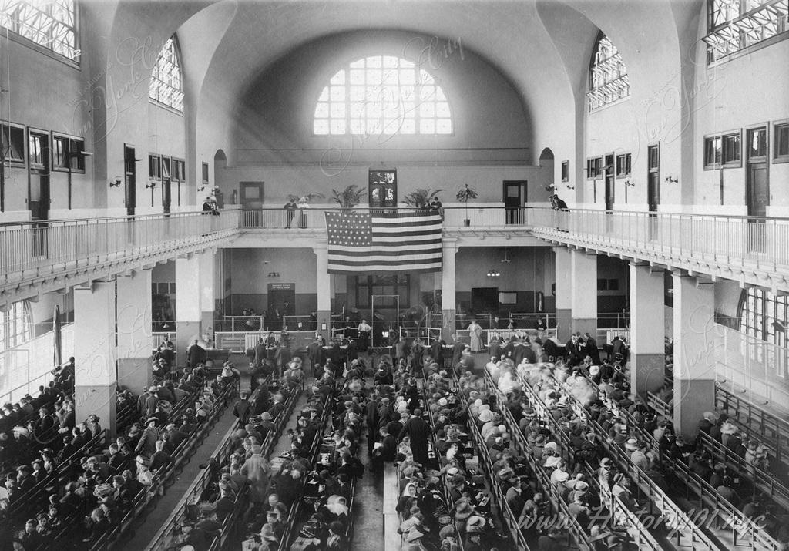

Originally inspired by French abolitionist Édouard René de Laboulaye's idea to commemorate emancipation in the United States, by the time sculptor Frédéric Auguste Bartholdi began work on the statue in 1875, it was decided to gift the statue to the U.S. to commemorate the upcoming centennial of the signing of the Declaration of Independence. It would also honor the friendship between the United States and France, with France building and paying for the statue and the U.S. building and paying for the statue's pedestal and erecting the statue once it arrived from France.
By the time the U.S. Centennial celebration came around, only the right arm and torch were were completed, partly due to Americans' lack of enthusiasm for the project resulting in a slow, if non-existent, fundraising campaign. In order to generate interest in his statue, Bartholdi had the arm and torch shipped to the United States so that they could to be exhibited at the Centennial Exposition in Philadelphia before it ended in 1876. The pieces were subsequently moved to Madison Square Park where souvenir photographs were sold and visitors could pay 50¢ to climb to the top of the torch, which towered over its surroundings, serving as advertisement for the endeavor from 1876 to 1882.
Interest from other cities such as Philadelphia and Boston to accept the statue as their own spurred New Yorkers' to fight to keep the statue in their own backyard. More serious and aggressive fundraising efforts commenced to raise funds for the pedestal, including art exhibits, benefit concerts, and auctions selling models of the statue, souvenir photographs, sheet music, and other momentos. One of the works submitted was the now famous poem by Emma Lazarus that contains the famous words that many Americans now know by heart.
The New Colossus
Born in 1849 to a wealthy Jewish merchant whose relatives could be traced back to the first organized Jewish migration to North America in 1654, the poet Emma Lazarus was asked to donate a piece of work for the "Art Loan Fund Exhibition in Aid of Bartholdi Pedestal Fund for the Statue of Liberty", a request she initially declined, stating she didn't write "to order." However, she had become an advocate for Jewish refugees who had fled the antisemitic pogroms of eastern Europe, immigrants arriving in New York who found themselves living in the fetid tenements of the Lower East Side that were worse than anything they had left behind. Now Emma saw a way to express her empathy for these refugees in terms of the statue by writing the sonnet, "The New Colossus."
Not like the brazen giant of Greek fame,
With conquering limbs astride from land to land;
Here at our sea-washed, sunset gates shall stand
A mighty woman with a torch, whose flame
Is the imprisoned lightning, and her name
Mother of Exiles. From her beacon-hand
Glows world-wide welcome; her mild eyes command
The air-bridged harbor that twin cities frame.
“Keep, ancient lands, your storied pomp!” cries she
With silent lips. “Give me your tired, your poor,
Your huddled masses yearning to breathe free,
The wretched refuse of your teeming shore.
Send these, the homeless, tempest-tost to me,
I lift my lamp beside the golden door!
Mother of Exiles

Though Emma Lazarus' poem garnered positive reviews and reframed the narrative surrounding the statue, by the time the statue was finally sent to the United States and dedicated on October 28, 1886, the poem had already faded from memory—it wasn't even included in the statue's dedication ceremony. It wasn't until 1903, 16 years after Emma Lazarus' untimely death, that her friend, Georgina Schuyler, rediscovered the poem and saw to it that it was engraved on a plaque that was placed inside the pedestal of the statue.
During this time, from 1880 to 1920, over 20 million immigrants, mostly from Southern and Eastern Europe, arrived in the United States, many of whom entered through the nation's first immigration processing center, Ellis Island, located just north of the Statue of Liberty. For millions of immigrants fleeing persecution and economic hardships in Europe the statue was their first picture of America in what they hoped would be a better life from the one they left behind.
It was also during this time that the U.S. enacted its first restrictions on immigration with the passage of the 1883 Chinese Exclusion Act that barred Chinese immigrants, followed by further restrictions at the height of a wave of xenophobia on the eve of U.S. involvement in World War I. The Immigration Act of 1924 instituted a system of quotas per nationality and strict immigration policy would remain in place through much of the 1930s. In the face of growing attempts among European Jews to escape Nazi persecution after Hitler's rise to power, immigration quotas often went unfilled, by as much as 50 to 80 percent in the years leading up to World War II.
In the aftermath of the Second World War, the United States passed it's first immigration policies to resettle European refugees in 1948 and formally ended the exclusion of Asian immigrants in 1952. Finally, the Immigration and Nationality Act overhauled America's immigration system by eliminating the quotas that had favored ethnic groups over others. Today, the United States continues to grapple with who should and shouldn't be allowed into the country. Yet, despite America's complicated history with immigration, many Americans had come to see the Statue of Liberty as a beacon of hope for anyone seeking a better life and their own American Dream.